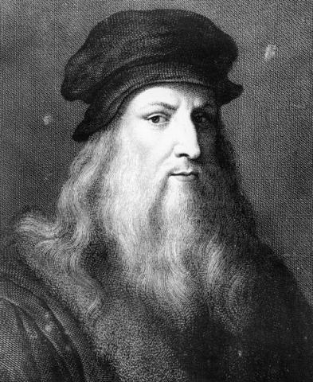

<--Back
Leonardo da Vinci

본명: 레오나르도 디 세르 피에로 다 빈치
출생: 1452년 4월 15일 피렌체 공화국 빈치
사망: 1519년 5월 2일 프랑스 왕국 앙부아즈
화가, 조각가, 발명가, 건축가, 과학자, 음악가, 공학자, 문학가,
해부학자, 지질학자, 천문학자, 식물학자, 역사가, 지리학자, 도시계획가,
집필가, 기술자, 요리사, 수학자, 의사 등등 다방면에서 활약한 천재이며,
다방면에서 두루 활약했던 르네상스 시기 인재의 대표적 인물상으로 평가받고
있다. 심지어 키도 매우 크고 외모, 목소리도 매우 빼어났다고 한다. 특히
걸출한 회화 작품들을 남겼으며, 대표작 <모나리자>, <최후의 만찬>은 세계적
으로 유명하다. 흔히 비슷한 시기에 살았던 예술가인 미켈란젤로 부오나로티와
라파엘로 산치오 등과 같이 거론되며 비교된다.
 Leonardo da Vinci
Leonardo da Vinci